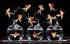

A landscape of transposable elements in fish¶
Equipe Volff (IGFL/UMR 5242) : Domitille Chalopin, Magali Naville
Centre Blaise Pascal : Emmanuel Quémener
Les éléments transposables (ETs) sont des éléments génétiques mobiles capables de s’exciser et de s’insérer dans l’ADN. Ce mouvement de matériel ADN peut dans certains cas avoir des conséquences néfastes pour l’organisme, par exemple via l’insertion dans un gène. A quelques rares exceptions, les ETs ont été trouvés chez tous les êtres vivants. Une classification universelle a été établie afin d’uniformiser l’annotation des ces éléments génétiques. Cette dernière sépare les éléments selon leur mode de transposition, du type « couper-coller » ou « copier-coller ». Chez les eucaryotes, les ETs peuvent occuper une grande partie du génome, leur proportion s’étalant de quelques pourcents chez le poisson fugu (4% de son ADN) à presque la totalité du génome chez certaines plantes.
Dans ce projet de recherche nous nous intéressons à la diversité des familles d’éléments dans les génomes de vertébrés, et plus particulièrement dans les génomes de poissons. Pour évaluer la diversité des ETs, nous commençons par les annoter de manière automatique, en utilisant des programmes qui identifient les répétitions de séquences d’ADN dans le génome. Nous associons à cette approche automatisée une annotation manuelle afin d’augmenter la sensibilité, en identifiant des familles peu répétées, éventuellement manquées par les logiciels d’annotation.
Les génomes de vertébrés étant de « gros » génomes, les programmes de comparaison de séquences requièrent des ressources informatiques importantes. Le CBP nous permet de mettre en oeuvre cette étape cruciale dans la réalisation du projet.
Publications¶
Genome Biology and Evolution 7(2):567–580. doi:10.1093/gbe/evv005 Adva
Contribution du CBP¶
Les premiers essais de processus se sont soldés par des échecs sur l’infrastructure du PSMN, sans qu’il soit possible d’établir la raison exacte. Une étude de faisabilité pour le portage sur un méso-centre de calcul est donc nécessaire. Emmanuel Quemener, du Centre Blaise Pascal met à disposition son temps et une station de travail dédiée disposant d’un large espace mémoire et de disque rapide SSD pour :
intégrer les applications sur une plate-forme générique ;
réaliser une documentation réutilisable au PSMN ou ailleurs ;
établir une métrologie sur l’empreinte mémoire, les entrées/sorties et les durées ;
évaluer le taux de parallélisation en prévision de l’utilisation de noeuds de calcul ;
optimiser l’exécution par une modification à minima du processes.